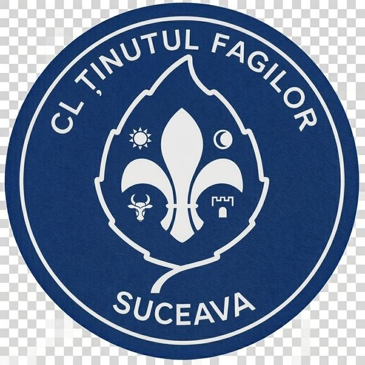

Construim caractere,
explorăm natura,
lăsăm o lume mai bună.

„Gata Oricând! Încearcă să lași această lume puțin mai bună decât ai găsit-o.”
Centrul Local „Ținutul Fagilor” Suceava
Mai mult decât activități. Experiențe care formează oameni.
Suntem Centrul Local „Ținutul Fagilor” Suceava, unul dintre pilonii mișcării cercetășești din România, cu o poveste ce a început în 1992. Astăzi, aducem împreună peste 100 de copii, tineri și lideri voluntari - de la 7 la peste 50 de ani - uniți de aceeași dorință: de a lăsa lumea puțin mai bună decât am găsit-o.
Prin educație non-formală, învățare prin acțiune, joc și aventură în mijlocul naturii, creăm un mediu în care fiecare cercetaș își descoperă curajul, independența și spiritul de echipă. De peste 30 de ani, creștem împreună generații de tineri responsabili, implicați și ghidați de valori puternice.
Ce este cercetășia?
Învățarea prin acțiune, cooperare și valori trăite în realitate.
Cercetășia este una dintre cele mai cunoscute forme de educație non-formală pentru copii și tineri. Prin principiul „învățării prin acțiune”, cercetașii descoperă lucruri noi făcând, explorând, colaborând și ajutând.
Activitățile în natură, munca în echipă, voluntariatul și proiectele pentru comunitate contribuie la dezvoltarea autonomiei, responsabilității, încrederii și spiritului de inițiativă.
De la începuturile sale, la începutul secolului XX, cercetășia a devenit o mișcare internațională care îi ajută pe tineri să nu fie doar pregătiți pentru viață, ci să fie implicați activ în construirea ei.
Principii și valori
- Respect
- Responsabilitate
- Curaj
- Solidaritate
- Loialitate
- Grija față de natură și de ceilalți